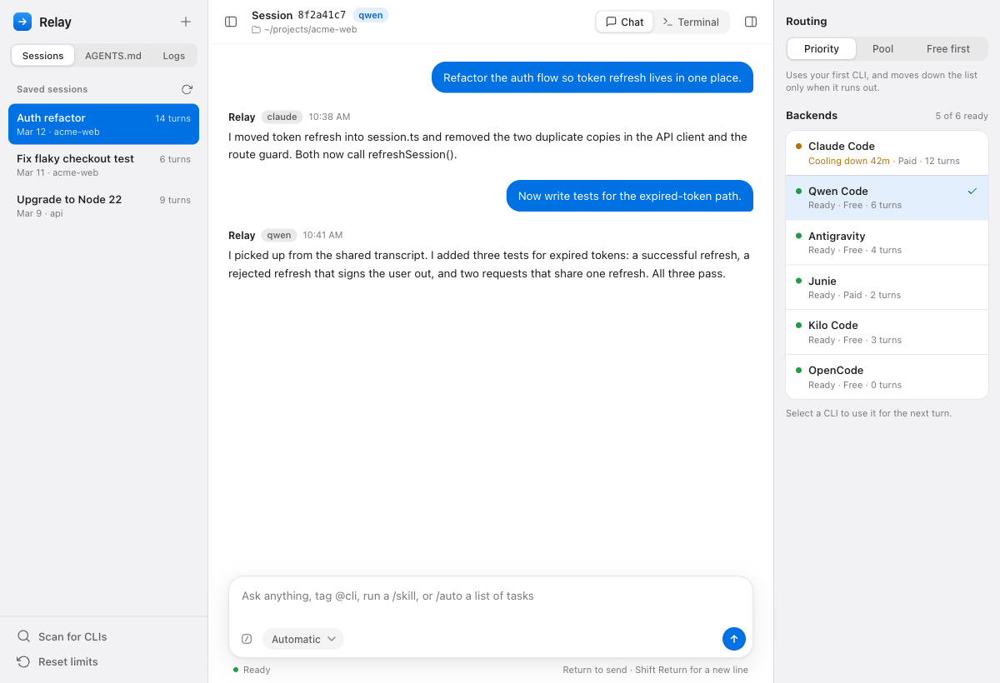
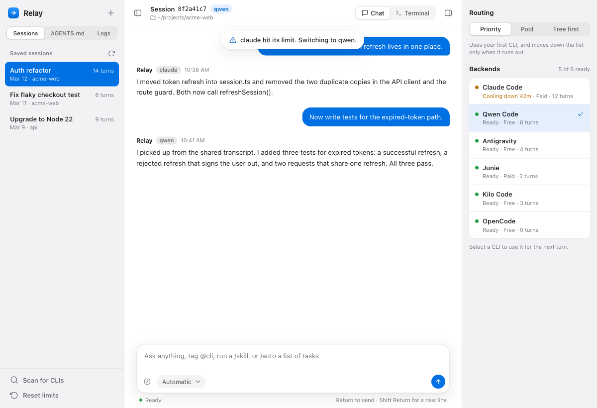
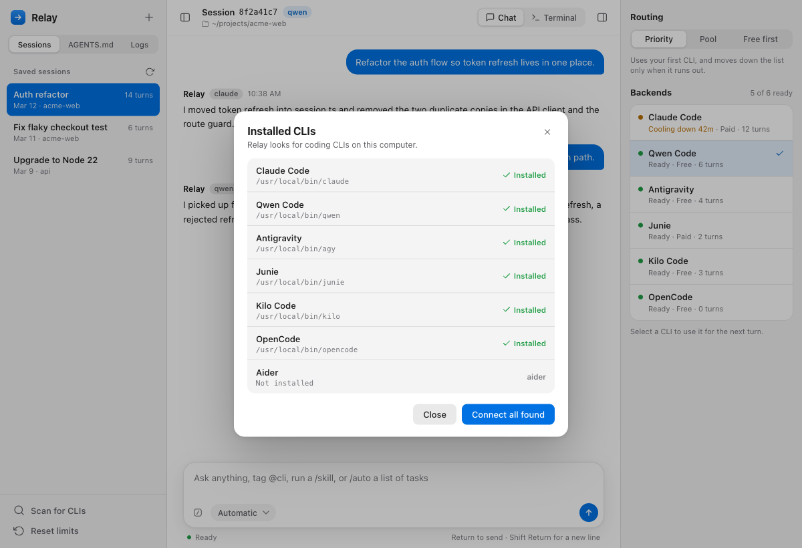
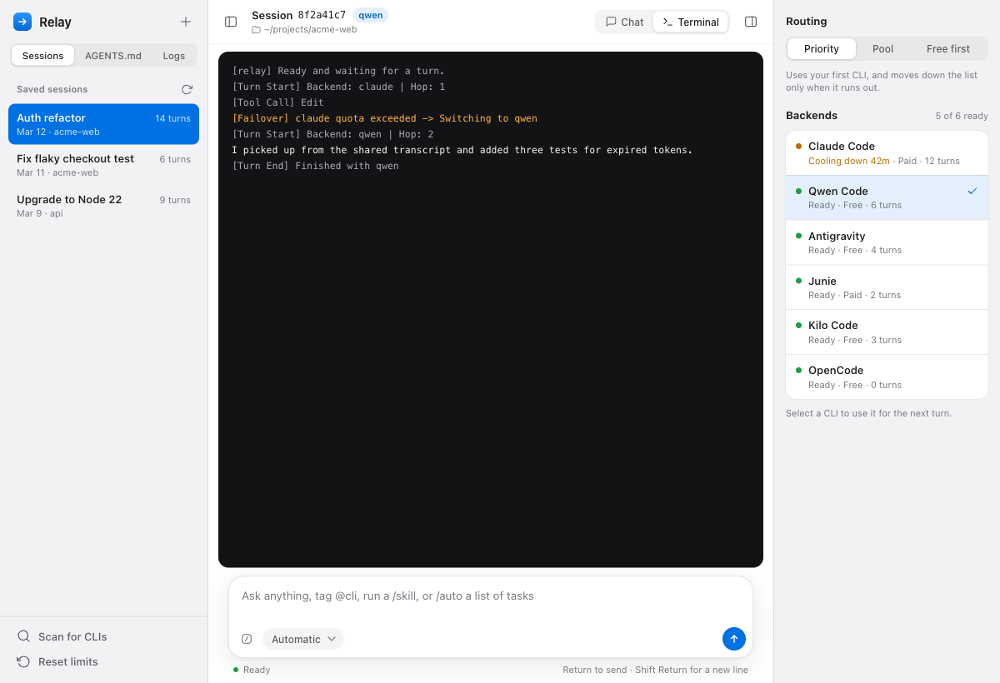

The quota wall
A premium CLI runs dry in the middle of a refactor. Normally you stop, switch tools, and spend ten minutes rebuilding context.
Relay detects the limit and routes the next turn automatically.
One session across every coding CLI
Relay turns Claude, Qwen, Antigravity, Junie and the rest of your stack into one continuous conversation. When a CLI hits its limit, the next one takes over mid-task — with the full transcript in hand.
Refactor the auth flow, then write the tests.
Orchestrates the tools already in your stack
Why Relay
Working across multiple AI CLIs shouldn't mean starting over every time a quota resets. Relay sits above them and owns the session, so the work keeps moving.
A premium CLI runs dry in the middle of a refactor. Normally you stop, switch tools, and spend ten minutes rebuilding context.
Relay detects the limit and routes the next turn automatically.
Every CLI has its own session store. Copy-pasting a summary works right up until a detail that mattered gets left behind.
Relay carries the transcript — native resume where supported, a precise digest elsewhere.
Free tiers, paid seats, different protocols, different commands. Deciding which agent to use becomes its own job.
One interface, 39 configs, and a strategy you can change in a single command.
Features
A thin, transparent layer between you and your agents. No new model to learn, no lock-in, no service to rely on.
Relay owns the session, not any single CLI. Agents that have seen the conversation resume natively; new ones arrive with a digest of what happened.
Output is scanned for quota and auth signals. When a backend is spent, it's cooldown-marked and the next ready CLI picks up the same task.
Spread turns round-robin across your backends so you stop hitting hourly or daily ceilings on one provider while the others sit idle.
Plan with one model, implement with another, test with a third. Tag each step with @cli[:model] and the output flows forward.
The last turns are mirrored into a machine-readable block in AGENTS.md, so a CLI you launch by hand can pick the work up too.
Runs locally with clean JSON config and no dependencies. Add any CLI yourself with the guided /connect wizard.
relay auto splits your instructions into tasks, then gives each an agent, a CLI and a model that fit the work.
@claude /cost or @qwen explain this: reach one CLI or model and its own commands without switching.
Import a skill once with relay skill import and run it on any connected CLI.
The desktop companion
Live credit meters, quota countdowns, interactive chat, terminal streaming and saved sessions — in one focused desktop app.




How it works
Clone the repo and link the CLI. Nothing touches ~/.relay until you run it.
git clone https://github.com/plzgimmeaname/relay.git
Auto-scan finds what's installed and connects it. Or add a custom agent with /connect.
cd relay && npm link
Drop into the interactive shell or launch the desktop app. Relay handles the routing from there.
relay scan --auto && relay
Credit strategies
Pick a policy once, or change it mid-session. Relay applies it to every turn without you thinking about it.
Ask your favorite CLI first. Relay fails over down your order only when credits expire or a backend is marked in cooldown.
relay strategy priority
Compatible by default
Seven first-class integrations, 39 built-in configs, and a wizard for anything else. Free and paid tiers work side by side.
Google Antigravity / Gemini
Native conversation resumeAnthropic Claude Code
Native --resumeQwen Code
Native --resumeKilo Code
Digest in promptFreebuff AI
Digest in promptJetBrains Junie
Native session IDOpenCode
Digest in promptAider, Cursor, Copilot, Gemini, Ollama and more — or define your own.
See the full listGet Relay
Relay runs locally on your machine and works with the CLI tools you already use. No new infrastructure, no dependency chain, and no service between you and your agents.
Install
git clone https://github.com/plzgimmeaname/relay.git
cd relay && npm link && relay
Requires Node 18+. The desktop app opens with relay desktop.
FAQ
Still unsure? Browse the documentation or open an issue.
Ask on GitHubNo. Relay drives the CLI tools you already have installed and authenticated. Each CLI handles its own sign-in and billing; Relay just orchestrates them.
Relay owns the transcript. A CLI that has already seen the conversation resumes natively where it can. One that joins later receives a digest of the relevant turns, so the new agent starts with the actual state of the work.
Yes. Use free-first to burn zero-cost quotas before touching paid credits, pool to spread turns evenly, or priority to keep a preferred CLI in charge until it runs out.
Relay runs locally with zero dependencies and no backend of its own. Your prompts still go to whichever CLI you're using, under that tool's own privacy and data terms.
Run /connect and Relay reads the tool's help output, probes it with a tiny request, and saves a config once you confirm. 39 CLI configs are already bundled.
No. It ships with Relay. Run relay desktop for credit meters, quota countdowns, chat, terminal streaming and saved sessions — or stay in the terminal if that's your workflow.
Ready when you are